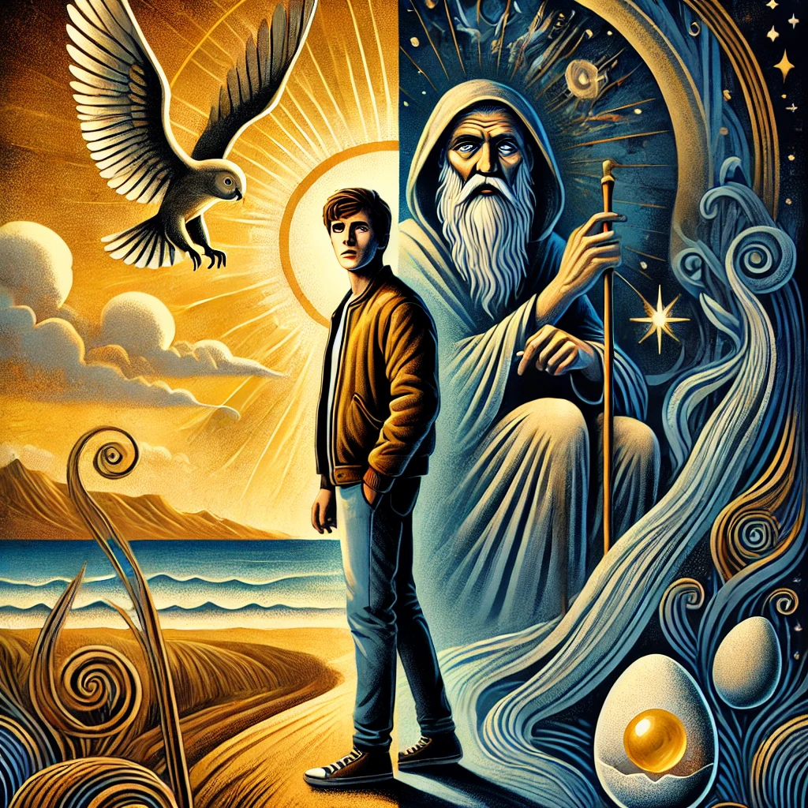

작가
헤르만헤세
출판일
2009년
감상평에 대한 AI그림
데미안은 성장에 대한 철학적 탐구를 담은 작품으로 소년이 자신의 내면의 목소리를 따라가는 이야기이다. 선과 악의 경계를 넘나들며 자아를 찾아가는 과정을 표현하였으며 기존 가치관을 깨뜨리고 독자에게 용기를 준다.

감상평에 대한 AI평가
~~~~AI평가~~~~~
✨ 사용자의 감상평은 데미안의 핵심 주제를 잘 짚어낸 분석이라고 생각해요.
✨ "기존 가치관을 깨뜨리고 독자에게 용기를 준다"는 감상은 이 작품의 가장 중요한 메시지를 잘 표현한 부분이에요.
✨ 철학적 사유를 자극하는 작품이라는 점에서 지금도 많은 사람들에게 사랑받고 있는 것 같아요.